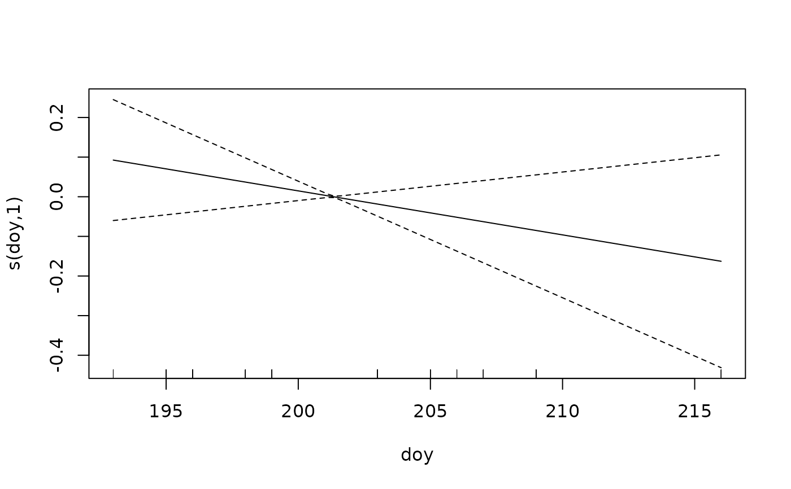

Converts an efp fit to a gam object, so that the plotting and prediction
tools in the mgcv package can be used. The coefficients and their
variances are those estimated by efp, but the smoothing parameters
and effective degrees of freedom in the gam object are not.
Value
an object of class gam, see gamObject
Details
The conversion fits a model using mgcv, which can take a very
long time if the model has many random effects. Predictions do not need
the conversion, see predict.efp.
Examples
data(ef_data)
ef_data$sampleID <- factor(paste(ef_data$date, ef_data$siteID,
ef_data$lifestage, ef_data$species))
m1 <- efp(count ~ lifestage + s(doy, k = 3),
data = ef_data, pass = pass, id = sampleID)
m1_gam <- as.gam(m1)
#> Note that, although predictions and plots will be correct
#> the smoothing parameters and degrees of freedom in the gam object are not those estimated by efp!
plot(m1_gam)
